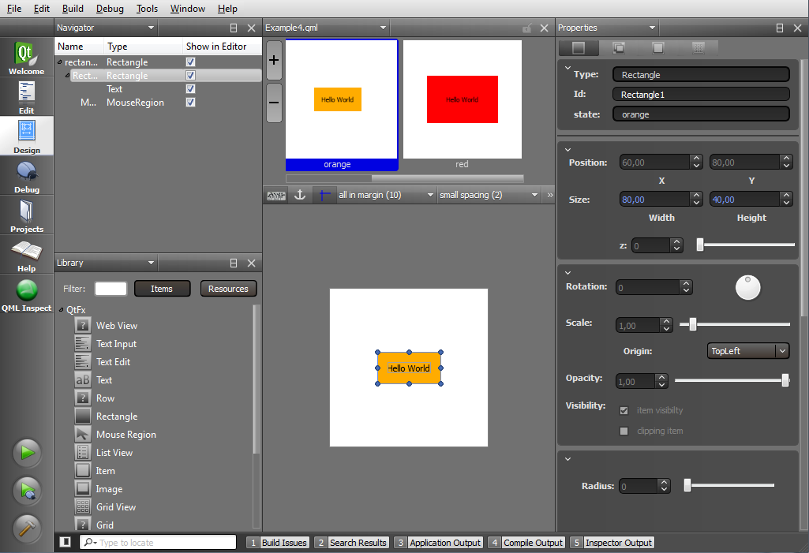
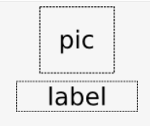
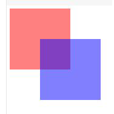

Данная статья представляет собой первую часть перевода официального введения в технологию Qt Quick для C++ разработчиков, доступного на сайте Nokia. Упомянутое руководство содержит базовую информацию о языке QML и о том, как интегрировать QML с C++, чтобы использовать все лучшие возможности от этих языков: высокую производительность бизнес-логики на С++ и динамичный пользовательский интерфейс на QML.
Обзор Qt Quick
Qt Quick включает в себя язык QML и C++-модуль QtDeclarative, позволяющий связывать QML и объекты C++. Для разработки приложений с использованием Qt Quick можно использовать среду разработки Qt Creator.
QML предоставляет возможности для декларативного построения дерева объектов при помощи QML-элементов. QML обеспечивает интеграцию между существующей системой типов Qt, основанной на QObject, и кодом на языке JavaScript, добавляет поддержку автоматического привязывания свойств (property bindings) и предоставляет сетевую прозрачность (network transparency) на уровне языка.
QML-элементы являются основными строительными блоками языка QML. Они бывают графическими и поведенческими. Эти элементы объединяются вместе в документах QML для построения компонентов, сложность которых может варьироваться от простых кнопок и ползунков до целых интернет-приложений таких, как программа просмотра фотографий Flickr.
Qt Quick помогает программистам и дизайнерам сотрудничать при разработке богатых пользовательских интерфейсов, которые становятся обычным явлением в портативных пользовательских устройствах: таких, как мобильные телефоны, медиаплееры, игровые приставки и нетбуки. С помощью С++-модуля QtDeclarative можно загружать QML-файлы и работать с ними непосредственно из Qt-приложений.
Qt Quick создан на основе существующих возможностей Qt. Он может быть использован для расширения существующих приложений или для построения абсолютно новых приложений. QML можно расширять с помощью модуля QDeclarative, используя для этого код на C++.

Рис. 1. Пользовательский интерфейс среды Qt Creator для создания компонентов Qt Quick
Основные концепции QML
Центральное понятие в QML — элемент. Элементы представляют собой базовые строительные блок, из которых формируется программа на QML. QML поддерживает различные визуальные элементы (например, Rectangle и Text), элементы взаимодействия (MouseArea и Flipable), и элементы анимаций (RotationAnimation и Transition). Также имеются сложные типы элементов, которые позволяют программисту работать с данными, создавать представления в архитектуре модель-представление (Model—View), а также многие другие.
Элементы QML имеют свойства (например, color), которые могут устанавливаться и изменяться разработчиком, а также сигналы (например, onClicked), которые используются для обработки событий и изменения состояний.
Визуальные элементы. Hello World!
Рассмотрим классический пример Hello World. Ниже приведен код, который выводит строку "Hello World" внутри закрашенного прямоугольника:
import Qt 4.7
Rectangle {
width: 300
height: 200
Text {
anchors.horizontalCenter: parent.horizontalCenter
anchors.verticalCenter: parent.verticalCenter
text: "Hello World"
}
}
Рассмотрим этот код подробно. Он представляет собой QML документ —- законченный блок исходного кода на QML, который можно запускать на выполнение. QML документы обычно хранятся в текстовых файлах, однако также могут быть созданы «на лету» во время работы программы.
Документ QML всегда начинается с одной или более операций импорта. В данном примере импортируется Qt 4.7. Для того чтобы предотвратить влияние изменений будущих версий Qt Quick на существующие QML-документы, при импорте явно указывается номер версии используемого модуля.
Элемент Rectangle используется для создания активного объекта. Объекты могут содержать в себе другие объекты. В приведенном выше коде объект Rectangle — это родитель для объекта Text. Также элемент Rectangle определяет окно верхнего уровня, обеспечивающее также управление фокусом в пользовательском интерфейсе.
Техническое замечание: свойство children любого QML-элемента содержит список всех дочерних визуальных элементов. Свойство resources, соответственно, — список невизуальных объектов. Оба списка заполняются автоматически, хотя при необходимости их можно заполнить явно. Третье свойство data представляет собой список, объединяющий объекты обоих указанных выше списков. Его нельзя заполнить явно, однако оно может пригодиться, если необходимо перемещаться от элемента к элементу по спискам элементов, не различая, являются ли они визуальными или не визуальными. Таким образом, можно написать:
Item {
Text {}
Rectangle {}
Timer {}
}
вместо
Item {
children: [ // свойство по умолчанию и неявно заданное
Text {},
Rectangle {}
]
resources: [ // свойство по умолчанию и неявно заданное
Timer {}
]
}
В приведённом выше примере используется операция привязки свойства (binding). Синтаксис этой операции имеет вид: свойство : выражение. Здесь есть два нюанса.
Во-первых, выражение записывается на языке JavaScript. Это позволяет определять значение свойства с помощью математических выражений, условных операций и других более сложных действий.
Во-вторых, привязка — это не присваивание. Если свойству что-то присвоено, то его значение остается неизменным до тех пор, пока ему не присвоят что-то другое. Синтаксис присваивания — свойство = выражение. При привязке значение свойства постоянно зависит от результата привязанного выражения: обновился результат выражения — обновилось значение свойства.
Пример: рассмотрим изменение ориентации мобильного устройства с книжной на альбомную. Пусть имеются родительский и дочерний прямоугольники, причём родиельский прямоугольник занимает весь экран, а в дочернем содержится центрированный текст. В результате поворота устройства размеры родительского прямоугольника меняются — он поворачивается на 90 градусов. Тогда автоматически (ввиду того, что свойства привязаны) пересчитываются размеры дочернего прямоугольника, и при помощи привязанных якорей (text anchors) текст заново выравнивается по центру.
Техническое замечание: привязка свойства осуществляется с помощью сигнала NOTIFY внутри C++-объекта с помощью макроса Q_PROPERTY для классов, унаследованных от QObject.
Оператор anchors.horizontalCenter: parent.horizontalCenter выравнивает текст по центру родительского прямоугольника. Якоря (anchors) предоставляют возможность размещения элемента путем задания его положения по отношению к родительскому или соседнему элементу. Обратите внимание, что в онлайн-документации у элемента Rectangle нет свойства anchors.horizontalCenter. Это связано с тем, что элемент Rectangle наследует все свойства элемента QML Item, в котором это свойство определено.
В настоящее время доступно 17 свойств якоря, позволяющих выравнивать, центрировать и размещать элементы друг относительно друга, устанавливать поля и смещения. Например, следующий код показывает, как элемент Text крепится к элементу Image, горизонтально по центру и вертикально вниз, с отступом с краю. В приведённом ниже примере элемент label типа Text размещается под элементом pic типа Image. По горизонтали элементы располагаются вдоль общей оси, проходящей через их центры, а по вертикали делается отступ в 5 точек между ними.
|
 |
Text { id: label anchors.horizontalCenter: pic.horizontalCenter anchors.top: pic.bottom anchors.topMargin: 5 ... } |
|
Рис. 2. Использование якорей для выравнивания элементов | |
Размещение визуальных элементов
При размещении визуальных QML-элементов, они могут накладываться друг на друга с эффектом прозрачности. Для использования эффекта прозрачности используется следующий синтаксис: opacity: число, где число берётся из диапазона от 0 (абсолютная прозрачность) до 1 (абсолютная непрозрачность).
Ниже приведен код, который создает два частично наложенных друг на друга прямоугольника — красный и синий. При этом общая часть прямоугольников благодаря эффекту прозрачности оказывается будет фиолетовой. Обратите внимание, как дочерний (синий) прямоугольник наследует 50% прозрачности от своего родительского (красного) прямоугольника.
|
 |
Rectangle { opacity: 0.5 color: "red" width: 100; height: 100 Rectangle { color: "blue" x: 50; y: 50; width: 100; height: 100 } } |
|
Рис. 3. Использование прозрачности | |
Техническое замечание: элементы-потомки всегда наследуют свойства родительского элемента. Например, элемент Rectangle — это класс-потомок от Item, поэтому все свойства элемента Item будут доступны и в элементе Rectangle. Наследование также может реализовываться с помощью QGraphicsView: когда один элемент помещается в другой, свойства родителя (элемента-контейнера) оказывают влияние на его дочерние объекты. Например, в приведенном выше коде, элемент childRectangle получает 50% прозрачности элемента parentRectangle.